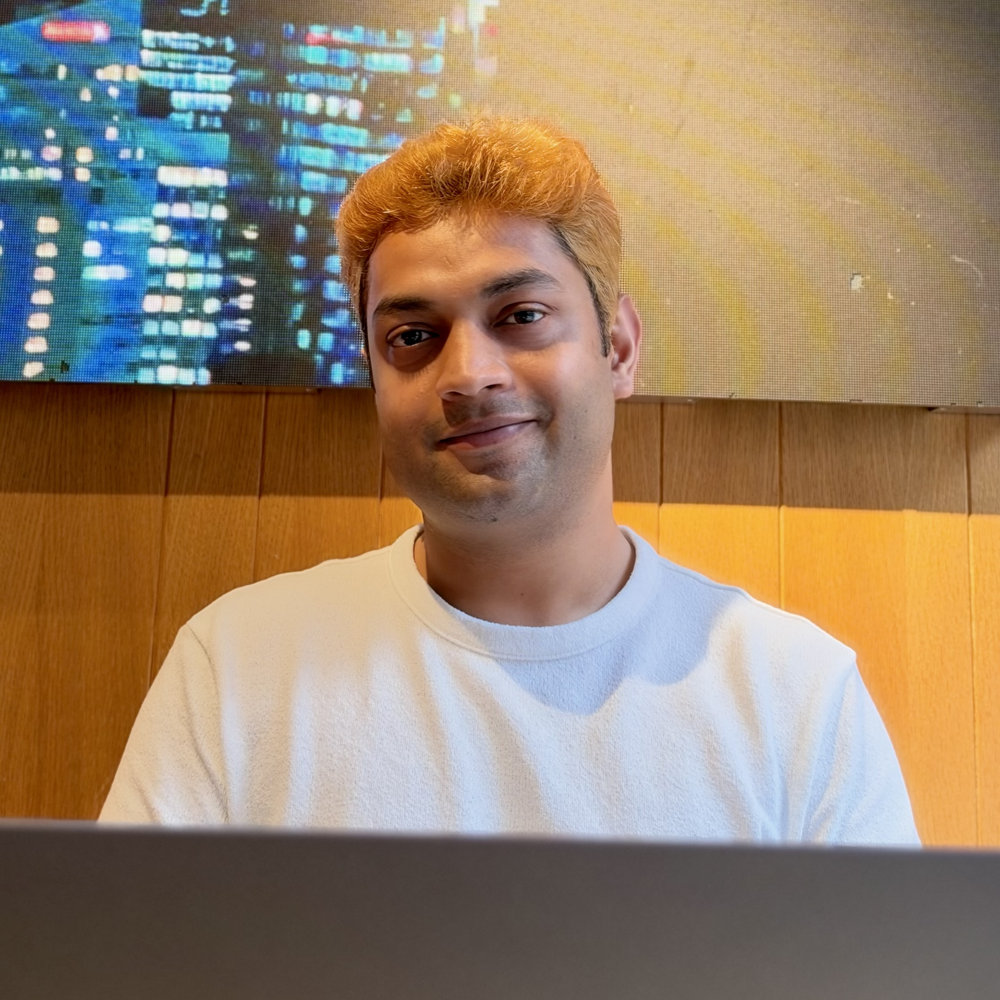
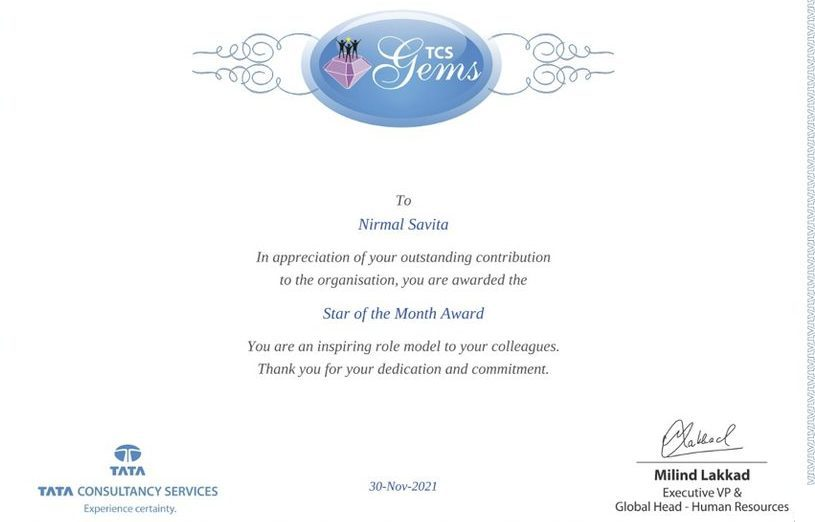
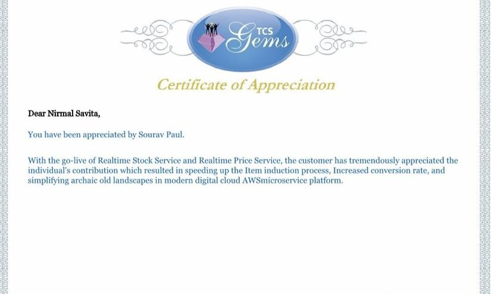
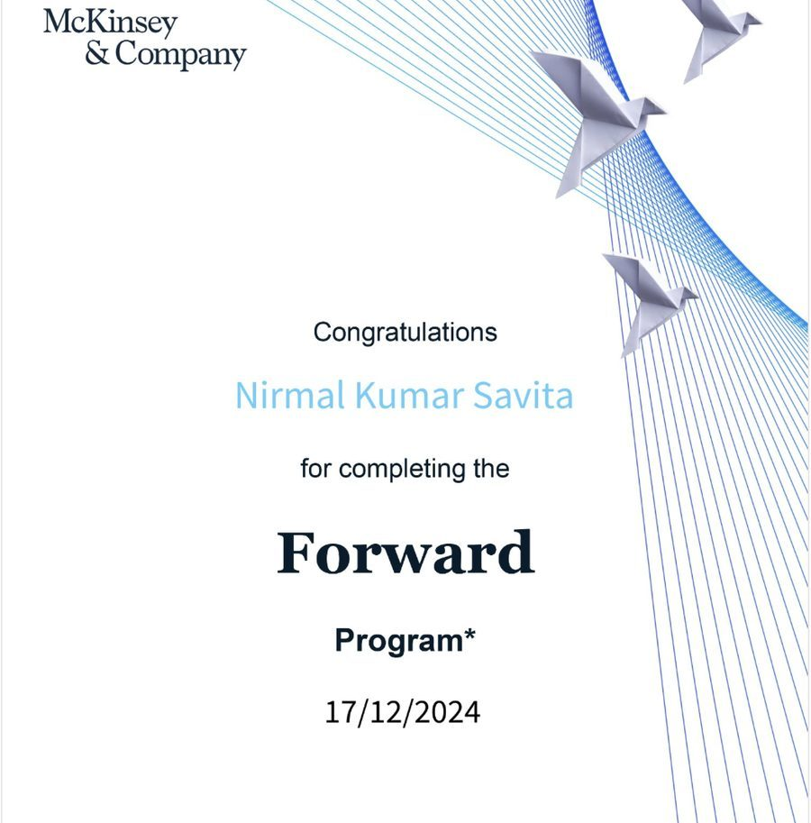
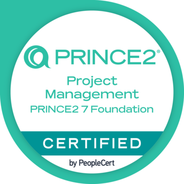
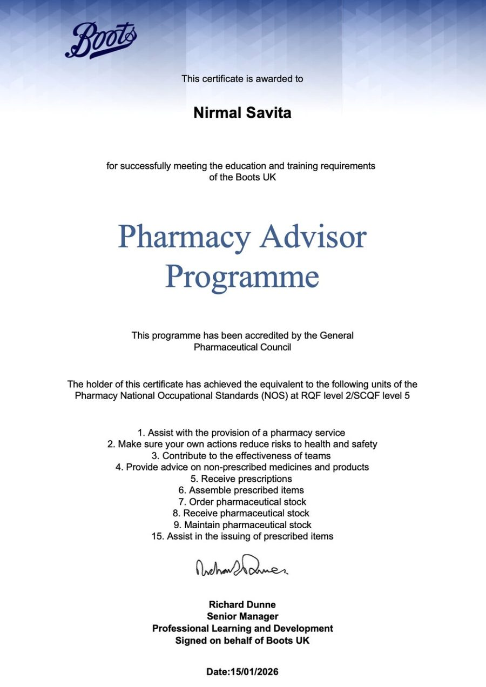

EPOS replacement programme
A programme of 6 projects replacing the point-of-sale system in 1,900+ stores, from small tills to large stores with self-checkouts. I work in the central operations team on requirements, design and readiness.
Digital adoption | Large-scale transformation | PRINCE2 certified
My career has always revolved around digital transformation and adoption. I am a Project Specialist at Boots UK on a programme replacing point-of-sale across 1,900+ stores. I started in pharmacy, trained as a software engineer, and now turn requirements, process design and change impact into plans that colleagues and customers can adopt.

A programme of 6 projects replacing the point-of-sale system in 1,900+ stores, from small tills to large stores with self-checkouts. I work in the central operations team on requirements, design and readiness.
Helped co-author 5+ Key Business Decision papers covering payments, fraud prevention, refund controls and customer journeys. One of them was the business case for a real-time coupon validation service, with a clear approve or reject recommendation, presented to senior executives.
Coordinated the integration of third-party payment vendors (Google Pay, Apple Pay, AMEX and Visa/CyberSource) into a UK retailer's e-commerce platform, managing dependencies across vendor, compliance and engineering teams through to go-live.
"Driving Sustainable Innovation: Software Project Management Practices in Formula E". A mixed-methods study combining interviews with team managers and engineers and analysis of performance metrics.
A social network visualiser I am building on my own, alongside work. It maps connections between people as an interactive graph.
Regularly acted as Designated Store Leader, supervising a team of 8 and running daily store and pharmacy operations for 400 to 500 customers a day, with 100+ prescriptions a day. Achieved 100% customer satisfaction in customer feedback.
Enterprise retail transformation on an Agile and DevOps team, with test planning, documentation and payment integrations. Interviewed and screened 300+ candidates for junior developer roles. Recognised with early promotion.
With five years of experience under his belt, Nirmal consistently demonstrated a remarkable ability to upskill and adapt to new technologies. His unwavering dedication to success and his outstanding work ethic set him apart. Nirmal's superb communication skills and his talent for collaborating within multi-dimensional teams make him an invaluable asset.
From day one, he quickly became an integral part of my team, showing not only technical competence but also excellent interpersonal skills, and passion. He consistently met deadlines, took initiative, and contributed valuable ideas that improved both workflow and team collaboration. He is respected and liked by both peers and management, and consistently went above and beyond to support team goals.





Project planning, RAID logs, change control, governance reporting, business cases, Agile and Waterfall delivery, lessons learned.
User stories and requirements, process mapping, change impact assessment, testing and user acceptance support, SQL.
Jira, Confluence, MS Project, MS Visio, Excel, Power BI, Git and GitLab, AWS, Java and Spring MVC.
Stakeholder engagement, workshops, supplier coordination, colleague supervision, clear written and spoken communication.
I am open to project, programme and business analysis roles in retail and technology. The best way to reach me is by email or LinkedIn.
nknirmal1295@gmail.com